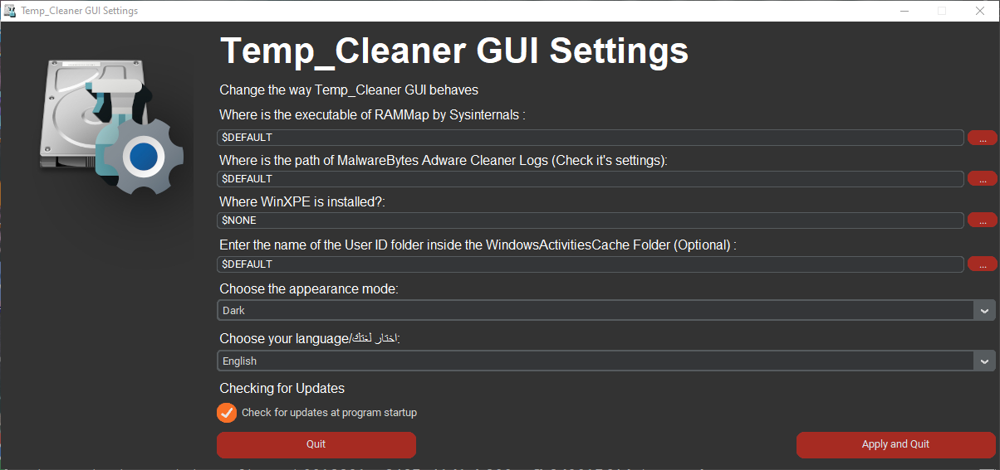
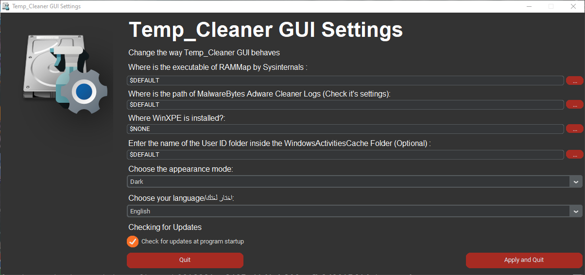

Temp_Cleaner GUI | Home | Downloads | About | ||
|---|---|---|---|---|---|

Ready to use the most powerful free PC Cleaner?
Temp_Cleaner GUI can help you free up disk space you weren't expecting to free, as proven by first time users.
Free and Open-Source
Being a Free and Open-Source product gives you the freedom to share the program and use it for both personal and commerical purposes.

Easy to use
As you probably hinted, All you have to do is just checking the areas you want to clean and click the "Start Cleaning" button
Supports vast majority of Windows Versions
Compatibility is our top priority, That's why Temp_Cleaner GUI supports the vast majority of Windows Desktop Versions

Safely cleans up your PC
We made Temp_Cleaner GUI in a way that it doesn't negatively affect the performance and stability of your PC or any programs in it.
Trusted by many websites and users
Temp_Cleaner GUI is trusted by many popular Software Listing Websites (check Softpedia and Majorgeeks and Oldergeeks.com pages for Temp_Cleaner GUI) and thousands of users worldwide
Cleans what other cleaners can't
Temp_Cleaner GUI has a lot of cleaning options that aren't available in most popular PC cleaners.

It respects your privacy
Temp_Cleaner GUI doesn't collect any sort of personal identification data.

Provides an Updater Program (Introduced in v5.6-stable)
You no longer have to bother going to this website just to check if there is an update available, We will inform you immediately when there is an update, Just be sure to enable Automatic Update Check in Settings.

Has an active 24/7 support community
Temp_Cleaner GUI has it's own dedicated Support Discord Server (Click here to join)
 

"Temp_Cleaner GUI provides you with a user-friendly way to get rid of unnecessary files that take up space and affect the performance of your computer in a safe manner. In addition to these advantages, deleting temporary files can help solve various app crashes, increase privacy and can protect your system from cyber threats." - Softpedia
"Temp_Cleaner GUI can clean many files that other drive cleaners can't" - MajorGeeks
"Powerful yet free and open-source PC cleaner." - OlderGeeks.com
Yassen, a Customer of Temp_Cleaner GUI since June 2022
One of our valuable customers from MajorGeeks
Yossef, a Customer of Temp_Cleaner GUI since v4.1
As you can see, Temp_Cleaner GUI is a Free and Open-Source program, which means that it is entirely depending on donations, and as an End User like you I know how annoying it is to use a program that throws ads everywhere on it's interface and irritates you with it, Temp_Cleaner GUI is different because it doesn't do that (despite being a Free product), to help me keep it like that I need you to donate, because when you donate, You help me to afford PC upgrades (to accomodate with the future of Software) and save for a better web hosting.
Don't have money?, No problem, You can still help.
Are you a Coder willing to participate in popular projects?, Show me your skills in Temp_Cleaner GUI's Github Repository
Not a Coder, no problem, You can still help me by providing ideas to improve Temp_Cleaner GUI, or provide me with Logos and other medias to use in my program
Send your ideas or Logos and other medias to my personal Twitter or Discord Server